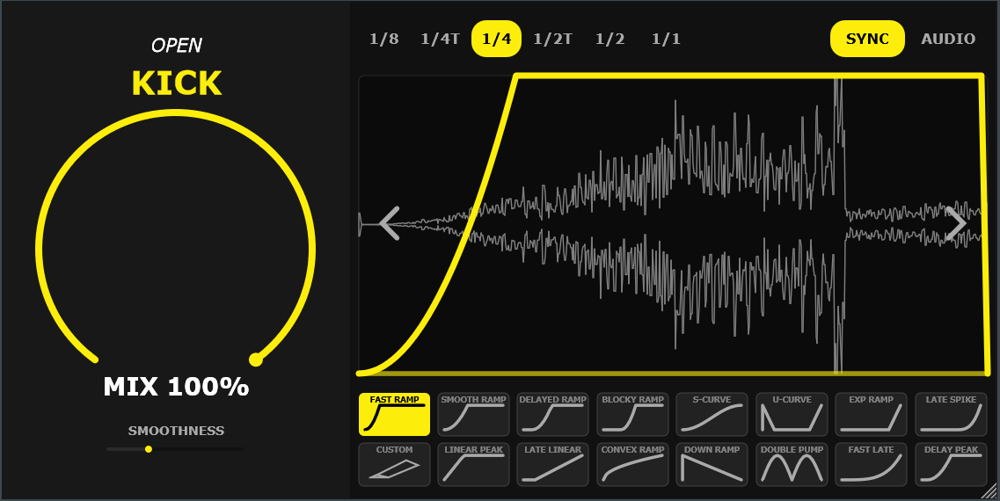

A hyper-lightweight, free Volume Shaper and Transient Sidechain Utility for modern producers. Takes up only 37MB of RAM per instance.
Love the plugin? ☕ Buy me a coffee to support updates!

Watch how easy it is to dial in the perfect sidechain curve.
Engineered entirely natively in C++ for maximum stability and minimum CPU footprint.
Features meticulously designed geometric ducking models, including S-Curves, Fast Ramps, Sine Pumps, and a fully interactive Custom User vector envelope.
Lock flawlessly into your DAW’s internal clock (with Triplet timing support!) or route external audio directly into the plugin to trigger the volume via transients.
See exactly what you're doing. The 60FPS dual-oscilloscope renders your main signal accurately while plotting external sidechain transients underneath with a translucent overlay.
OpenKick is distributed under the MIT Open Source License. You can compile it yourself or grab the latest pre-compiled build below.
git clone https://github.com/navidsatarmaker/OpenKick.git
cmake -B build
cmake --build build --config Release